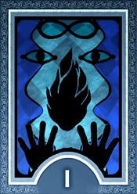

üåô O que são as Arcanas em Persona 3 Reload?
Em Persona 3 Reload, assim como em outros jogos da série Persona, as Arcanas representam categorias espirituais e simbólicas, baseadas nos Arcanos Maiores do Tarô. Cada Persona no jogo pertence a uma Arcana específica, que define suas características gerais, estilo de combate e afinidades. Além disso, as Arcanas estão diretamente relacionadas aos Social Links (ou no Reload, chamados de Vínculos Sociais), afetando o progresso e o poder das Personas que você pode fundir.
Vínculo Social (Social Link / Bond): Cada Arcana está ligada a um personagem com quem você pode formar um vínculo social: O nível do seu vínculo social em uma Arcana específica melhora suas fusão de Personas dessa Arcana. Quanto maior o nível do vínculo, maior será o bônus de experiência ao fundir Personas daquela Arcana.
FOOL
Representa novos começos, potencial e imprevisibilidade. No jogo: Simboliza o grupo SEES e sua jornada cheia de descobertas e incertezas. As Personas do Fool são equilibradas e versáteis.
MAGICIAN
Representa ação, iniciativa e vontade de aprender. No jogo: Associado a personagens jovens, impulsivos ou ambiciosos. Personas com magias de ataque e habilidades ofensivas.
PRIESTESS

Simboliza sabedoria, intuição e proteção. No jogo: Associada a personagens sensíveis ou de apoio. Personas da Priestess costumam ter habilidades de cura e suporte.
EMPRESS
Simboliza autoridade, elegância e nutrição. No jogo: Representa figuras femininas fortes e nobres. Personas dessa Arcana equilibram poder ofensivo e habilidades de suporte.
EMPEROR

Simboliza liderança, estrutura e controle. No jogo: Relacionado a personagens que buscam ordem ou possuem forte senso de responsabilidade. Personas com foco em defesa e habilidades físicas.
CHARIOT

Representa força, determinação e vitória através da vontade. No jogo: Ligado a personagens apaixonados por esportes ou desafios. Personas com alto poder físico e velocidade.
LOVERS

Simboliza amor, desejo e decisões importantes no coração. No jogo: Relacionado a relacionamentos e escolhas emocionais. Personas geralmente possuem magias de suporte e charme.
HERMIT
Simboliza solidão, introspecção e busca por verdade interior. No jogo: Ligado a personagens reclusos ou misteriosos. Personas com habilidades mágicas equilibradas e foco em status.
FORTUNE

Representa mudança, destino e ciclos da vida. No jogo: Associado a eventos inesperados e ao fluxo natural das coisas. Personas versáteis que podem adaptar-se bem em combate.
STRENGTH

Simboliza coragem, autocontrole e poder interior. No jogo: Ligado a personagens que lutam contra suas fraquezas pessoais. Personas com foco em força física e resistência.
HANGED

Representa sacrifício, paciência e novas perspectivas. No jogo: Associado a personagens que enfrentam situações difíceis ou aprendem a aceitar mudanças. Personas com habilidades defensivas e de suporte.
DEATH

Simboliza fins necessários, transformação e renascimento. No jogo: Ligado a eventos sombrios e misteriosos. Personas poderosas, com habilidades sombrias e de destruição.
TEMPERANCE

Representa equilíbrio, moderação e harmonia. No jogo: Associado a personagens que tentam conciliar diferentes aspectos da vida. Personas equilibradas entre ataque e suporte.
DEVIL
Simboliza tentação, vício e desejos ocultos. No jogo: Ligado a personagens que enfrentam suas sombras e fraquezas. Personas que possuem habilidades de debuff e status negativos.
TOWER

Representa destruição súbita, revelação e mudanças drásticas. No jogo: Personas raras e muito poderosas, com magias destrutivas.
STAR

Simboliza esperança, inspiração e sonhos. No jogo: Associado a personagens otimistas ou idealistas. Personas com habilidades de cura e magias brilhantes.
MOON

Representa ilusões, medos e o inconsciente. No jogo: Ligado a personagens que enfrentam dúvidas internas. Personas que causam efeitos de status e confusão.
SUN

Simboliza vitalidade, energia e realização. No jogo: Associado a personagens calorosos e positivos. Personas com habilidades equilibradas e luminosas.
JUDGEMNET
Representa redenção, decisões finais e novos começos. No jogo: Simboliza o destino do grupo SEES e seu papel no mundo. Personas muito poderosas, com habilidades divinas.
AEON
Representa eternidade, evolução e transcendência. No jogo: Ligado a personagens especiais que transcendem o tempo e o destino (exemplo: Aigis). Personas raras e únicas.